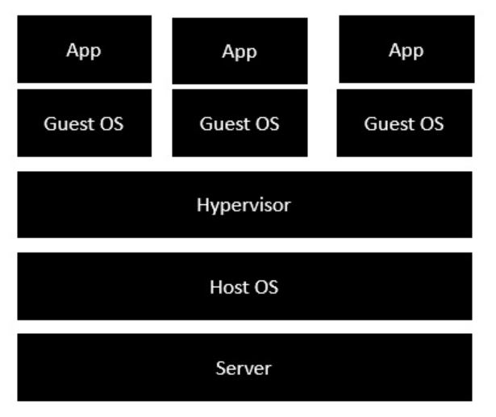
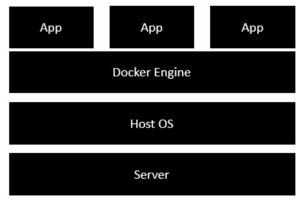

Let's understand the difference between containers (Containerization) and Virtual Machine (O.S. level of
Virtualization):-
Virtual Machine(Virtualization) -
-> A Virtual Machine is a software that allows us to install and use other operating systems (Windows, Linux, and Debian) simultaneously on our machine.
-> The operating system in which virtual application runs are called virtualized operating systems. These virtualized operating systems can run programs and performs tasks
we perform in a real operating system.
The following image shows the standard and traditional architecture of virtualization.

-> The server is the physical server that is used to to host multiple virtual machines.
-> The Host OS is the base machine such as Linux or Windows.
-> The Hypervisor is either VMWare server and workstation, Oracle VM VirtualBox or Microsoft Virtual PC that is used to host virtual machines.
-> You would then install multiple operating systems as virtual machines on top of the existing hypervisor as Guest OS.
-> You would host your applications on top of each Guest OS.
Containers(Containerization) -
-> Containers are lightweight alternatives of the virtual machine.
-> It allows developers to package up the application with all its libraries and dependencies, and ship it as a single package.
-> The advantage of using container is that you don't need to allocate any RAM and disk space for the applications.
-> It automatically generates storage and space according to the application requirement.
The following image shows the new generation of virtualization that is enabled via Containerization. Let's have a look at the various layers.

-> The server is the physical server that is used to host multiple virtual machines. So this layer remains the same.
-> The Host OS is the base machine such as Linux or Windows. So this layer remains the same.
-> Now comes the new generation which is the Docker engine. This is used to run the operating system which earlier used to be virtual machines now as Docker containers.
-> All of the Apps now run as Docker containers.
The clear advantage is in this architecture is that you don't need to have extra hardware for Guest OS. Everything works as Docker containers.
-> While both virtual machines and containers enable application portability, containers are significantly lighter and thus, more portable.
-> The main reason is that, unlike VMs, containers no longer include an OS and its associated kernel (i.e. the part of OS that gets loaded first upon boot up and eventually
takes charge of memory, disk, process and task management).
-> In containerization, a single kernel resides in the host OS and is simply shared among containers.
-> All that's housed in a container is the applicaton code and its dependencies.
The absence of a kernel benefits containers in several ways.
-> Container sizes can be as small as 10 megabytes, whereas virtual machines can easily exceed 10 gigabytes (a windows server 2016 VM, for instance, could be about 32 GB).
-> The memory requirments for containers are significantly lower than those of virtual machines.
-> Virtual Machines grab the amount of memory that's been allocated for them upon boot up, regardless of whether they alreday need it or not.
-> No kernel means faster boot times.
-> A typical virtual machine would require a few minutes to boot due to its kernel, while some containers would require only less than a second.